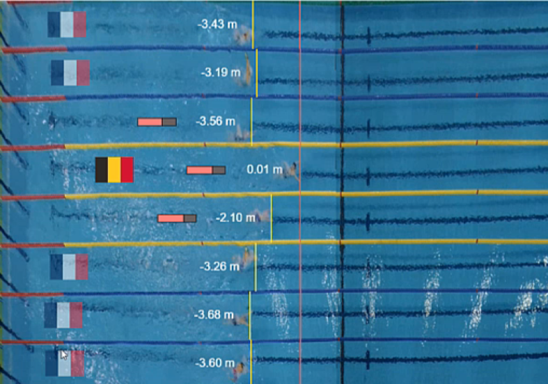
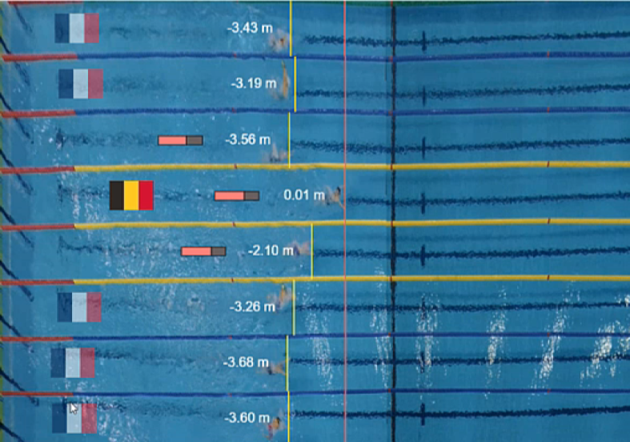
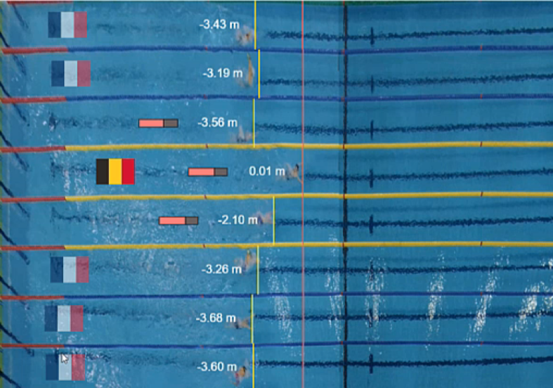

Confirmed keynote speakers are:

Do you own a smartwatch, watch sports on TV, or play video games? If so, chances are high that you have encountered situated visualizations. In a situated data visualization, the data is directly visualized near the physical space, object, or person it refers to. They are used due to their many potential benefits: they can surface information in the physical environment and allow viewers to interpret data in-context, monitor changes, observe patterns over time, and collaborate with other people.
In this presentation I will highlight challenges related to making data available in the form of situated and embedded visualizations. I will show how situating visualizations in the context of mobile devices and embedding them in sports videos and video games poses challenges to the design of interactive visualizations: visualizations need not only to be small and glanceable but also often to be read in motion. I will end with an overview of research on situated visualization more broadly and outline open research opportunities.Petra Isenberg is a research director(DR) at the Inria Saclay Centre at Université Paris-Saclay, France in the Aviz team and part of the Computer Science Laboratory (LISN) of the University Paris-Saclay. Prior to joining Inria, she received her PhD from the University of Calgary in 2010 on collaborative information visualization. Petra also holds a Diplom-engineer degree in Computational Visualistics from the University of Magdeburg. Her main research areas are visualization and visual analytics with a focus on visualization for non-desktop devices, interaction, and evaluation. She is particularly interested in exploring how people can most effectively work together when analyzing large and complex data sets on novel display technology such as wearables, wall displays, or tabletops. Petra is associate editor-in-chief at IEEE CG&A, associate editor at Computer Graphics Forum, ethics and diversity chair at VGTC, the co-chair of the IEEE VIS Steering Committee, and a member of the IEEE Visualization Academy.